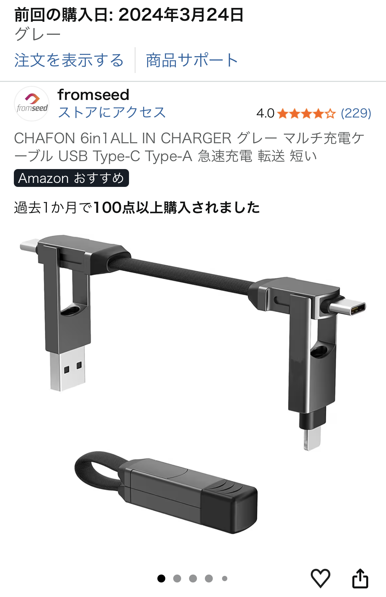

「鍵を失くしやすい」「外出先でケーブルが必要になることがある」──そんな悩みを同時に解決してくれるのが、今回レビューするキーホルダー型変換ケーブルです。

このガジェットの最大の魅力は、鍵と常に一緒に持ち歩く仕組みが作れることです。 鍵は単体で持つと置き忘れやすいですが、こうした“存在感のある小物”を付けることで、手触り・重さ・視認性が上がり、紛失リスクが大幅に下がります。
実際の口コミでも「鍵を失くさなくなった」という声があり、これは日常のストレスを確実に減らしてくれるポイントです。
普段はキーホルダーとして使い、必要な時だけサッと取り外してケーブルとして使えるのが便利。 外出先で「充電ケーブルがない！」という場面は意外と多いですが、この製品なら常に持ち歩いている＝忘れないという安心感があります。
特に、モバイルバッテリーや友人の端末と接続する際に役立つため、1つ持っておくと小さなトラブルを防げます。
口コミにもある通り、こういう小物は所有欲を満たすデザイン性が強いです。 金属パーツの質感やコンパクトなギミック感は、ガジェット好きにはたまらないポイント。
「実用性 × 小物としての満足感」が両立しているため、プレゼントにも向いています。
口コミ評価が高い理由は、「鍵の紛失防止」×「変換ケーブル」×「所有欲を満たすデザイン」という3つの価値が1つにまとまっているからです。
特に、鍵をよく置き忘れる人には強くおすすめできるアイテム。 普段はキーホルダー、必要な時はケーブル──この“二刀流”が想像以上に便利です。
小物ガジェット好きなら、持っているだけで気分が上がるはずです。